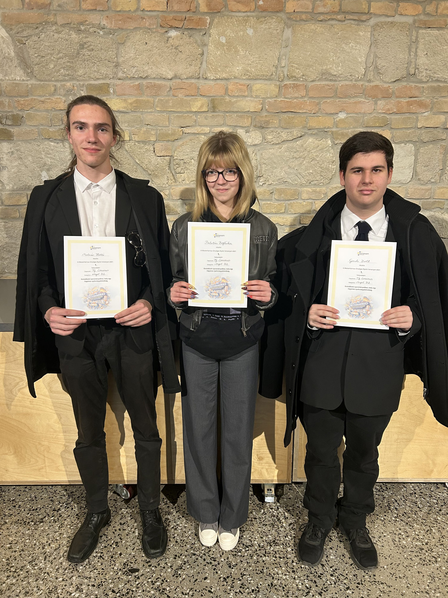

Mesterhármas
2025. április 9-én Budapesten rendezték meg a "Mesterhármas" országos nyelvi verseny döntőjét, melyet az Euroexam nyelvvizsgaközpont szervezett. Iskolánk csapata nemcsak az első helyet szerezte meg a több, mint ezer csapat közül, hanem elnyerte a „Legjobb egyházi fenntartású intézmény csapata” különdíjat is.
A csapat tagjai: Palotás Boglárka (9.D), Gondi Zsolt (10.D), Molnár Holló (10.D).
Felkészítő tanár: Maróthy Ádám